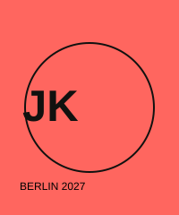

<!doctype html><html lang='pt-BR'><meta charset='utf-8'><meta name='viewport' content='width=device-width,initial-scale=1'><title>Line-up | Jacinto K-Pop</title><link rel='icon' href='favicon.svg'><link rel='stylesheet' href='style.css'><header><a class='logo' href='index.html'>JK / JACINTO<small>BERLIN 2027</small></a><nav><a href='index.html'>Início</a><a class='active' href='lineup.html'>Line-up</a><a href='ingressos.html'>Ingressos</a><a href='informacoes.html'>Informações</a><a href='faq.html'>FAQ</a></nav></header><main><section class='banner blue'><p class='tag'>10—11 JULHO 2027</p><h1>LINE-UP</h1><p>Oito artistas fictícios. Dois dias de K-pop sem fronteiras.</p></section><section class='wrap space'><h2>SÁBADO / 10 JULHO</h2><div class='schedule'><article><time>14:00</time><h3>CHERRY BOMB</h3><span>BLOOM STAGE</span></article><article><time>15:30</time><h3>JUNO LEE</h3><span>ORBIT STAGE</span></article><article><time>17:10</time><h3>LUNAR CLUB</h3><span>BLOOM STAGE</span></article><article><time>20:30</time><h3>NEON IX</h3><span>JACINTO MAIN STAGE</span></article></div><h2>DOMINGO / 11 JULHO</h2><div class='schedule'><article><time>14:20</time><h3>APRIL 24</h3><span>BLOOM STAGE</span></article><article><time>16:00</time><h3>RIN &amp; THE CITY</h3><span>ORBIT STAGE</span></article><article><time>18:10</time><h3>SEVENWAVE</h3><span>JACINTO MAIN STAGE</span></article><article><time>20:45</time><h3>VIOLET HAZE</h3><span>JACINTO MAIN STAGE</span></article></div></section></main><footer><strong>JACINTO K-POP</strong><p>Rafael Rc · Henrique · Gabriel Freires<br>Festival fictício · Berlin 2027</p></footer><script src='script.js'></script></html>